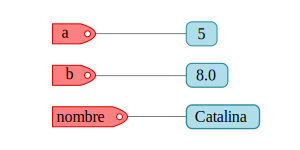
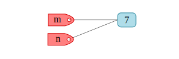

Variables, operadores y expresiones¶
Al ser un lenguaje de alto nivel, Python dispone de los tipos de datos elementales en cualquier lenguaje de programación, pero además incluye estructuras de datos más complejas y con altas prestaciones que facilitan en muchos aspectos la tarea del programador.
Python es un lenguaje de tipado dinámico en el que no hace falta declarar el tipo de dato que asignará a una variable, de igual manera una variable puede cambiar de tipo conforme la ejecución del programa, por ello se debe tener cuidado con la sintaxis para definir cada tipo de dato.
Variables¶
En Python todo lo que creamos son objetos y las variables son referencias a esos objetos, las variables se definen por asignación utilizando el signo =, por ejemplo:
a = 5
b = 8.0
nombre = "Catalina"
Piensa el proceso de asignación como la acción de etiquetar las direcciones de memorias en donde se almacenan los objetos de Python, tal como se esquematiza en la figura.

Veamos ahora otro ejemplo de definición de variables:
m = 7
n = m
En este caso primero definimos la variable m que será una etiqueta del objeto 7, cuando se hace la asignación n = m se coloca otra etiqueta al objeto 7.

Se puede verificar que ambas variables refieren al mismo objeto:
print( id(m) )
print( id(n) )
1653370112
1653370112
La función id devuelve el identificador del objeto, cada identificador es único durante el ciclo de vida de cada objeto.
Para nombrar las variables se deben tener en cuenta las consideraciones que a continuación se describen.
Los nombres de variables sólo deben contener letras, números y guiones bajos.
esfuerzo_axial = 150e6
diametro_01 = 30e-3
nombre = "Ximena"
El nombre de una variable puede comenzar con una letra o un guión bajo, pero no con un número
Los siguientes nombres de variables son válidos:
temperatura = 35
_deformacion_unitaria = 300e-6
Pero este no, puesto que comienza con un número:
30_presion = 30e3
File "<ipython-input-22-75b70e022a72>", line 1
30_presion = 30e3
^
SyntaxError: invalid token
Los espacios no están permitidos en los nombres de variables. Sí necesitas nombrar una variable con dos o más palabras, puedes utilizar el guión bajo para separar las palabras.
modulo de elasticidad = 70e9
File "<ipython-input-23-67a55b9eeb54>", line 1
modulo de elasticidad = 70e9
^
SyntaxError: invalid syntax
modulo_de_elasticidad = 70e9
Evita utilizar palabras claves/reservadas y nombres de funciones y/o cualquier otra palabra que Python utilice.
Por ejemplo, observa que pasa si intentamos utilizar como nombre de variable la palabra reservada lambda:
lambda = 1500
File "<ipython-input-25-44b09368e0cc>", line 1
lambda = 1500
^
SyntaxError: invalid syntax
Python nos manda un SyntaxError. La lista de palabras reservadas del lenguaje que no puedes utilizar como nombre de variable la puedes listar con las siguientes instrucciones:
import keyword
print(keyword.kwlist)
['False', 'None', 'True', 'and', 'as', 'assert', 'break', 'class', 'continue', 'def', 'del', 'elif', 'else', 'except', 'finally', 'for', 'from', 'global', 'if', 'import', 'in', 'is', 'lambda', 'nonlocal', 'not', 'or', 'pass', 'raise', 'return', 'try', 'while', 'with', 'yield']
Ademas de las palabras reservadas del lenguaje, evita utilizar los nombres de funciones o clases built-in de Python, esos nombres los puedes ver tecleando las siguientes instrucciones:
import builtins
print( dir(builtins) )
['ArithmeticError', 'AssertionError', 'AttributeError', 'BaseException', 'BlockingIOError', 'BrokenPipeError', 'BufferError', 'BytesWarning', 'ChildProcessError', 'ConnectionAbortedError', 'ConnectionError', 'ConnectionRefusedError', 'ConnectionResetError', 'DeprecationWarning', 'EOFError', 'Ellipsis', 'EnvironmentError', 'Exception', 'False', 'FileExistsError', 'FileNotFoundError', 'FloatingPointError', 'FutureWarning', 'GeneratorExit', 'IOError', 'ImportError', 'ImportWarning', 'IndentationError', 'IndexError', 'InterruptedError', 'IsADirectoryError', 'KeyError', 'KeyboardInterrupt', 'LookupError', 'MemoryError', 'ModuleNotFoundError', 'NameError', 'None', 'NotADirectoryError', 'NotImplemented', 'NotImplementedError', 'OSError', 'OverflowError', 'PendingDeprecationWarning', 'PermissionError', 'ProcessLookupError', 'RecursionError', 'ReferenceError', 'ResourceWarning', 'RuntimeError', 'RuntimeWarning', 'StopAsyncIteration', 'StopIteration', 'SyntaxError', 'SyntaxWarning', 'SystemError', 'SystemExit', 'TabError', 'TimeoutError', 'True', 'TypeError', 'UnboundLocalError', 'UnicodeDecodeError', 'UnicodeEncodeError', 'UnicodeError', 'UnicodeTranslateError', 'UnicodeWarning', 'UserWarning', 'ValueError', 'Warning', 'WindowsError', 'ZeroDivisionError', '__IPYTHON__', '__build_class__', '__debug__', '__doc__', '__import__', '__loader__', '__name__', '__package__', '__spec__', 'abs', 'all', 'any', 'ascii', 'bin', 'bool', 'bytearray', 'bytes', 'callable', 'chr', 'classmethod', 'compile', 'complex', 'copyright', 'credits', 'delattr', 'dict', 'dir', 'display', 'divmod', 'enumerate', 'eval', 'exec', 'filter', 'float', 'format', 'frozenset', 'get_ipython', 'getattr', 'globals', 'hasattr', 'hash', 'help', 'hex', 'id', 'input', 'int', 'isinstance', 'issubclass', 'iter', 'len', 'license', 'list', 'locals', 'map', 'max', 'memoryview', 'min', 'next', 'object', 'oct', 'open', 'ord', 'pow', 'print', 'property', 'range', 'repr', 'reversed', 'round', 'set', 'setattr', 'slice', 'sorted', 'staticmethod', 'str', 'sum', 'super', 'tuple', 'type', 'vars', 'zip']
Los nombres de variables son case sensitive, es decir, se distingue entre mayúsculas y minúsculas.
No es lo mismo definir una variable nombre que otra llamada NOMBRE:
NOMBRE = "Ana"
nombre = "Paola"
nombre == NOMBRE
False
Los nombres de variables deberían ser cortos pero descriptivos.
Por ejemplo, si estamos almacenando un valor que corresponde a un diámetro, suele ser más conveniente y recomendable utilizar diametro en lugar de d como nombre de variable.
Puedes encontrar más recomendaciones sobre cómo nombrar variables en la PEP 8 – Style Guide for Python Code
Tipos de datos básicos¶
Enteros (int)¶
Los enteros son un tipo de dato básico en cualquier lenguaje de programación. En Python para definir un valor entero se debe colocar el número sin ningun punto decimal, por ejemplo:
a = 1
type(a)
int
De manera explícita se puede definir un valor entero utilizando la función int:
m = 5.0
n = int(5.0)
type(m), type(n)
(float, int)
Observe que cuando colocamos un punto decimal, automáticamente la cantidad deja de ser un entero y pasa a ser un flotante.
De coma flotante (float)¶
Los valores de coma flotante son cantidades numéricas que incluyen a todos los reales. Para que Python reconozca un valor numérico como de tipo float se debe adicionar el punto decimal o bien utilizar la función float para hacer la indicación de manera explícita, por ejemplo:
w = 5.3
x = 10.0
y = 9.
z = float(8)
type(w), type(x), type(y), type(z)
(float, float, float, float)
Booleanos (bool)¶
Las variables booleanas sólo pueden adoptar dos valores: verdadero (True) o falso (False). Un valor booleano se puede definir directamente a partir de las constantes True y False:
a = True
b = False
type(a), type(b)
(bool, bool)
O bien a partir de otros objetos Python al aplicar la función bool:
bool("hola")
True
bool([])
False
bool(0)
False
bool(10)
True
En general, la función bool devolverá un False cuando se tienen objetos nulos o vacíos, en cualquier otro caso devolverá el valor True.
Operadores relacionales y lógicos¶
Los operadores relacionales (o de comparación) nos permite efectuar comparaciones entre objetos de Python. El resultado de una comparación es un valor booleano True o False, dependiendo la naturaleza de la comparación.
A continuación se ejemplifican los operadores relacionales que podemos utilizar en Python:
# "igual a"
1 == 1
True
# "diferente a"
"a" != "a"
False
# mayor que
10 > 5
True
# menor que
5 < 1
False
# mayor o igual que
30 >= 30
True
# menor o igual que
20 <= 10
False
Hay que tener cuidado y verificar que al hacer comparaciones los objetos implicados sean compatibles. Cuando los objetos no son comparables Python devolverá un TypeError, por ejemplo:
"a" > 10
---------------------------------------------------------------------------
TypeError Traceback (most recent call last)
<ipython-input-11-7a3a9a917f79> in <module>
----> 1 "a" > 10
TypeError: '>' not supported between instances of 'str' and 'int'
[0,4] < (1,2)
También podemos encadenar comparaciones con instrucciones del tipo a < b < c, donde ese < puede ser cualquier operador relacional, por ejemplo:
1 < 2 < 3
True
10 > 10 > 3
False
3 == 3 >= 2
True
Los operadores lógicos nos sirven para realizar operaciones de lógica booleana entre valores de tipo bool. En Python podemos utilizar los operadores lógicos and, or y not, observe los siguientes ejemplos:
True and True
True
True and False
False
True or False
True
not True
False
(1 == 1) and (2 > 1)
True
(0 == 0) or (10 >=20) and (1 > 0)
True
not( (2 > 3) and (5==5) )
True